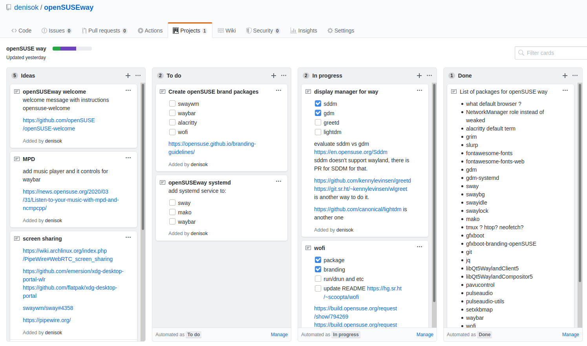

openSUSEway status, running other platforms
sway tilling window manager
user status
Denys Kondratenko
stdden@opensuse.org
Sway is a tiling Wayland compositor
## Why - lightweight Windows manager and Wayland Compositor - for the funs of tiling wms and keyboard efficient interaction - Wayland based technology that supposed to be modern, secure and simpler Note: This will only display in the notes window.
## What do you need? All basic packages are already in Factory. Development project with additional packages: [X11:Wayland](https://build.opensuse.org/project/show/X11:Wayland)
## Sway ```bash sudo zypper in sway ``` - this would install swaywm with stock look - installs _/usr/share/wayland-sessions/sway.desktop_ - shall appear in login manager if one is used (gdm and etc)
## Waybar ```bash sudo zypper in waybar ``` - have more features than basic _Swaybar_ - _Swaybar_ comes with _sway_ and works out of the box as i3bar replacement
## Other tools - [mako](https://github.com/emersion/mako) a lightweight Wayland notification daemon (in Factory) - [Wofi](https://hg.sr.ht/~scoopta/wofi) is a rofi-like launcher/menu for wlroots-based wayland compositors (in devel project) - [wf-recorder](https://github.com/ammen99/wf-recorder) is a utility program for screen recording of wlroots-based compositors (in devel project)
## Configurations - [Manage dotfiles with Git](https://news.opensuse.org/2020/03/27/Manage-dotfiles-with-Git/) is a good practice to manage local configuration - example config for this demo [openSUSE way](https://github.com/denisok/openSUSEway)
## openSUSE way - if nobody uses new and better technologies, they aren't taking over - idea is to have out of the box install with Sway and some tools that works for most - solving quick import of user configs could give user smooth experience - maybe even system role in the installator to provide this desktop option
## Design - could follow openSUSE design brand rules - easy customizable css for the most of the applications - snippet from _.config/waybar/style.css_ ``` * { border: none; border-radius: 0; font-family: "Source Sans Pro"; font-size: 15px; box-shadow: none; text-shadow: none; transition-duration: 0s; } window#waybar { color: rgba(53, 185, 171, 1); background-color: rgba(23, 63, 79, 0.4); border-bottom: 2px solid rgba(53, 185, 171, 0.4); } ```
## Config - Sway and Waybar both support distro specific configs under _/etc/_ - some of packages as _wofi_ doesn't, it looks only at _~/.config/_ (could be overridden by _--config_) - Sway supports _config.d/_ additional configs style for user configuration - a lot of users switching from distros/wm or reinstalling from scratch would want their config - any way to provide smooth config merge and better out of box experience ?
## openSUSE way desktop - any interest in such desktop enviroment? - could be small, fast and modern installation for geeks - so far personal exercise for the dotfile and quick system installation <p></p>
Questions?
https://github.com/denisok/openSUSEway
Wayfire